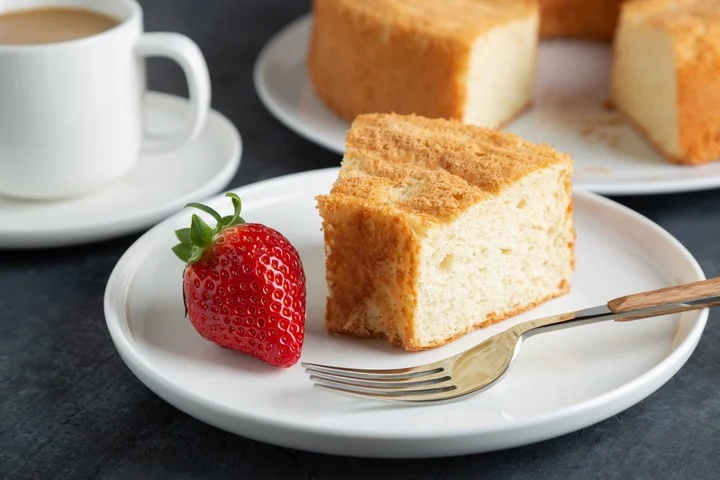

Aprende cómo hacer un bizcochuelo de vainilla casero y esponjoso, que es un hito en la vida de cualquier amante de la repostería.

Lista de ingredientes:
4 huevos
2 tazas de ázucar (400 gramos)
2 tazas de harina leudante
1 taza de leche (240 mililitros)
1 cucharada de escencia de vainilla
1 vaso pequeño de aceite (100 mililitros)
Preparación
Batir el azúcar con los huevos hasta que se integren completamente.
Agrega la mitad de la harina leudante, tamizada y batir de forma envolvente.
Incorpora la leche y cuando ya se haya integrado, añade el resto de la harina.
Si quieres hacer un bizcochuelo de chocolate en este paso puedes añadir dos cucharadas tamizadas de cacao en polvo sin azúcar. También puedes preparar un vistoso bizcocho marmolado.
Truco: si no dispones de los ingredientes necesarios para hacer un bizcochuelo con harina leudante, no te preocupes. Puedes usar harina normal y añadir una cucharadita de polvo de hornear o levadura química.
añadir a la mezcla el aceite y la vainilla y continúa batiendo unos minutos más
Vacía la mezcla del bizcochuelo casero en un molde especial para horno.
Hornea el bizcochuelo en el horno a 180 ºC por 45 minutos o hasta que esté doradito.
Truco: precalienta el horno antes de meter el bizcocho, así te asegurarás de que se horneará de manera uniforme.
Deja reposar unos minutos y cuando haya tomado temperatura ambiente, desmolda el bizcochuelo de vainilla esponjoso.
Si deseas, puedes cubrirlo con chocolate, con azúcar glass o con fondant de azúcar para hacer una tarta de cumpleaños decorada.
Aqui te dejo un videito explicativo!
Si te gusto te invito a que me sigas en las redes y me dejes tus comentarios!!